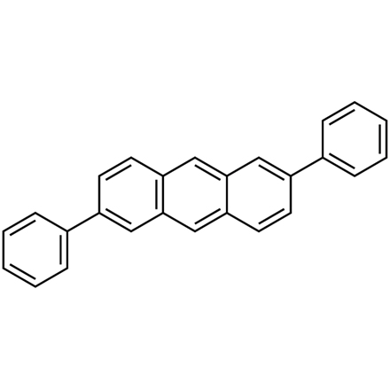
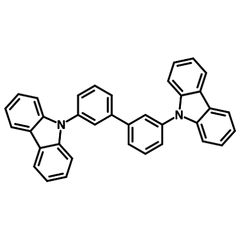

4 Confirmation of Triplet-Triplet Upconversion in 2,6-DPA
4.1 Introduction
In this section, I investigated the electroluminescence properties of a model anthracene derivative 2,6-diphenylanthracene (2,6-DPA) (Liu, Zhang, et al. 2015; Liu, Dong, et al. 2015) (see Figure fig-dpa}), as well as 10wt% 2,6-DPA doped as a host in 3,3’-Di(9H-carbazol-9-yl)-1,1’-biphenyl (mCBP, isomer of CBP) (see Figure fig-mcbp) (Ying et al. 2018; Chen et al. 2017; Ihn et al. 2017). The OLED structure can be found in Appendix [apen:oledex]. 2,6-DPA was based in OLEDs in neat and doped emissive layers, which their performance was analysed under steady state and nanosecond pulse excitation. The high \(wt\%\) of mCBP host doped into the layer is used to separate the chromophores of 2,6-DPA. Herein, I found that 2,6-DPA exhibits the TTU mechanism to generate extra singlet excitons, while the host-guest system fails to exhibit TTU, as expected. At low-current densities (J) the EQE of the device increases proportionally to \(J\) because of the absence of dominating singlet-triplet annihilation (STA). At high current densities, STA becomes a significant loss causing a reduction in EQE and gain.


4.2 Results
The OLED devices that were creates followed the structure, Indium Tin Oxide (ITO) 100nm / N,N’-Di(1-naphthyl)-N,N’-diphenyl-(1,1’-biphenyl)-4,4’-diamine (NPB) 40nm / 2,6-DPA 40nm / 1,3,5-Tris(3-pyridyl-3-phenyl)benzene (TmPyPB) 30nm / Calcium 5nm / Aluminum 100nm (see Figure fig-dpaenergy). Each layer was thermally evaporated under high vacuum (\(10^-6 mbar)\) without break to avoid atmosphere exposure. To achieve \(10wt\%\) , a simultaneous doping of mCBP and 2,6-DPA with deposition rates \(0.1Å/s\) and \(1Å/s\) was required. The deposition rate for the organic layers were between \(0.3 - 0.6Å/s\). Within the device (see Figure fig-dpaenergy), there is a substantial hole injection barrier, enabling an accumulation of holes at the DPA/TmPyPB interface. The thickness and structure was chosen as per the OLEDs made in Ref. (39?), where they found 40nm DPA layers performed best. The NPB layer has excellent energy level alignment to facilitate hole-injection and transport (Shi and Tang 2002). Calcium is similar to Lithium Fluoride (LiF) in terms of energy level, so it was used instead a the buffer layer. Hole-blocking and electron transport layer were decided as TmPyPB because of the deep HOMO and matching LUMO energy levels. Such a step-wise energy level diagram enables efficient injection and transport of charge carriers. The spectra showed a strong blue emission (peak 445 nm), matching the characteristic anthracene blue. The amorphous 2,6-DPA has a smaller peak at 510 nm.
Measurements of voltage were in increments of 0.2 V and up to 10 V in DC measurements to observe refined characteristic curves before Joule heating degrades the device. Four neat film devices were fabricated each having eight pixels (four \(0.75mm^2\) and four \(0.3mm^2\)). Due to faulty contacts, thermal evaporation alignment issues, and scratches or blemishes on the substrate window some pixels become unable to be tested. Others can degrade whilst a voltage is applied. The J-V-L graph of four different pixels, as well as their EQE graph, can be found in Appendix [apen:dpaextr]. A turn-on voltage of \(3.1\pm0.1\) V was achieved at the defined \(1 cd/m^2\), with the maximum brightness approaching \(4500\pm500 cd/m^2\) at \(9\pm0.2\) V. The J-V-L characteristics of neat-film 2,6-DPA and the EQE versus current density graph can be found in Figure fig-dpajvl. A roll up of EQE (peak \(0.7\pm0.1\)%) until \(~40\pm10 mA/cm^2\) demonstrates early triplet-triplet upconversion gain (see Figure fig-dpaege). The peak EQE of these 2,6-DPA devices, however, do not exceed the theoretical maximum EQE of \(2.1\%\) (calculated using the PLQY of \(41.2\%\) (Liu, Zhang, et al. 2015)).
The doped 2,6-DPA in 10wt% of mCBP devices were thermally evaporated, following the structure: Indium Tin Oxide (ITO) 100nm / 1,1-Bis[(di-4-tolylamino)phenyl]cyclohexane (TAPC) 35nm / 2,6-DPA/mCBP (10wt%) 40nm / 2,2’,2”-(1,3,5-Benzinetriyl)-tris(1-phenyl-1-H-benzimidazole) (TPBi) 65nm / Calcium 5nm / Aluminum 100nm (see Figure fig-mcbpenergy). These doped devices were meant as a comparison for non-exhibiting TTU devices. Their J-V-L characteristics (Figure fig-mcbpkvl) and EQE versus current density (Figure fig-mcbpeqe) display typical characteristics of fluorescent OLEDs and no presence of EQE roll up at low current densities (peak \(1.5\pm0.1\%\),\(EQE_{max}~2.25\)). A turn-on voltage of \(6.0\pm0.3\) V was achieved at the defined \(1 cd/m^2\), with the maximum brightness approaching \(4800\pm600 cd/m^2\) at \(15\pm0.2\) V.
As mentioned in the introduction, in a current density versus luminance plot (log-log scale) two regimes will appear with altering slopes. The non-doped OLED demonstrates a clear regime change with a slope of \(~1.7\pm0.05\) at low current densities, changing into \(~0.74\pm0.03\). The transition current density is roughly \(~20\pm10 mA/cm^2\). The slope is \(<2\) due to imperfect TTU and losses, such as STA and other quenching. An observed slope shift from \(>1\) to \(<1\) indicates definite gain of triplet to singlet excitons.
Pulse measurements (transient electroluminescence) will demonstrate the population dynamics of the excitons even to high current densities. For the non-doped film, 300 ns pulse widths were used to suppress Joule heating while maintaining long enough steady-state lifetime to see the gradual EL increase from TTU. The device area used was \(0.7mm^2\) to reduce geometrical capacitance that minimises RC response distortion. For doped films, a long pulse width (\(1.5\mu s\)) was used to extrapolate the affect STA had on fluorescent materials at high current densities. Whilst DC measurements only reached current densities of \(1 A/cm^2\), pulse measurements reach densities of \(>2.5 A/cm^2\). At high current densities, doped and non-doped devices show a sharp rise, characteristic of space charge limited current conditions), with the initial rise lifetime of \(~30 ns\). Non-doped devices at a lower current density sees a longer initial rise (\(100ns\) at \(10 V\)) followed by a gradual increase as time progresses. This is characteristic of TTU devices because of the recycling nature of the triplet excitons generating additional singlets. At high current densities (40 V) the steady state shows a slight decrease, indicating STA has dominated rate over the TTU generation rate. How STA affects the steady state in non-TTU devices can be seen in doped-devices (see Figure fig-mcbppulse}) – a noticeable decrease in EL as time progresses. There is a \(~12\%\) difference between the steady states at higher and lower current densities. At lower current densities, STA is not prevalent so a steady state is visible. STA dominates via FRET, a process that is determined by the spectral overlap between \(S_1\) emission aand \(T_1\rightarrow T_n\) absorption bands.
The turn off electroluminescence of pulse measurements also provide useful information. For TTU devices, a prompt decay is expected after voltage turn off due to the loss of direct singlet generation, followed by a delayed fluorescence (DF) bimolecular decay function \[EL_{DF} = \frac{1}{(a+bt)^2}\] where \(a\) and \(b\) are constants. Trapped carriers recombining will cause a delayed fluorescence component with slope between close to 1 (Debye and Edwards 1952; Kabe and Adachi 2017), as we see in Figure fig-mcbpfit.
4.3 Discussion
2,6-DPA is an anthracene derivative with low PLQY and moderate charge mobility in amorphous state. In neat film OLEDs, 2,6-DPA shows distinctive TTU properties such as distinctive regimes in the J-L log-log plot, with a TTU threshold of \(~20\pm10 mA/cm^2\). Not only does it exhibit steady state increase at low current densities, showing a \(40\%\) rise over \(~300ns\) pulse width, but it also exhibits a delayed fluorescence component following the triplet-triplet upconversion DF trend. The TTU process in neat films can be seen in Figure fig-ttadpa. This 2,6-DPA neat film was compared to the doped film 2,6-DPA in \(10wt\%\) mCBP, which was created to separate the chromophores of 2,6-DPA to extend the triplet states beyond the short-range Dexter energy transfer process. This was successful as the doped OLED showed trends of typical fluorescence. Despite the peak EQE not surpassing the theoretical maximum of typical fluorescent emitters – a feat that would confirm extra exciton generation – the evidence presented here is enough to show 2,6-DPA shows promise for enhancing a host-guest system with TTU. To increase device performance, optimisation of fabrication process and device structure needs to be considered specific to an amorphous 2,6-DPA film.